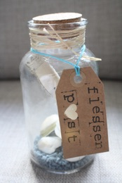
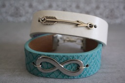

Nieuwsbrief Februari

Valentijns Cadeau Tip:
Een handgemaakt sieraad met een speciale bedel eraan maakt een cadeau super orgineel en romantisch.
Flessenpost met een geheime boodschap erin.
Een mooie deco fles met bijvoorbeeld een roos erin en een lieve tekst erop.
Een cadeaubon te besteden bij Beans Beauty Salon om eens lekker jezelf te verwennen.
Valentijns Aanbieding


Nieuw bij Beans Beauty Salon
Naast de eigen sieradenlijn van Beans Beauty Salon is er nu ook de ‘Flessenpost’. Schattige flesjes met kurkdop, zand en schelpen in diverse kleuren en soorten met een speciaal kaartje eraan, maken deze een super leuke decoratie voor in huis. Een orgineel cadeau voor een ander of jezelf!
Vaak wordt er aan mij gevraagd, wat voor type huid heb ik nou eigenlijk? Daarom heb ik de verschillende huid types op een rijtje gezet.
Normale huid
Een 'normale' huid is eerder uitzondering dan regel. Maar is jouw huid normaal, dan heb je niet meer nodig dan een verzorgingsproduct. Je herkent dit type aan een fijne poriënstructuur op de wangen, iets grovere poriën op voorhoofd, neus en kin. Bovendien is er genoeg talg om de huid zacht en soepel te houden.
Kies een product dat het vochtgehalte op niveau houdt. En de huid beschermt tegen schadelijke UV-straling, invloeden van buitenaf, zoals luchtvervuiling en uitdrogende weersinvloeden. Wanneer je de vijfentwintig gepasseerd bent, kun je een crème met bijvoorbeeld vitamine E nemen om huidveroudering tegen te gaan.
Droge huid
Voelt je huid vaak (vooral na bad of douche) trekkerig en oncomfortabel aan, dan heb je goede kans dat je een droge huid hebt. De poriën zijn niet zichtbaar of minuscuul klein.
Een droge huid kampt met een vettekort, omdat de talgkliertjes te weinig actief zijn. Hierdoor is niet alleen de huid droog, maar ook vaak gevoelig en vochtarm.
Talg houdt de huid namelijk niet alleen soepel, het draagt ook bij aan de natuurlijke beschermlaag van de huid. De droge huid vraagt dus om intensieve verzorging. Gebruik producten die in staat zijn om het ontbrekende vetfilmpje aan te vullen en inwerken op het vochttekort.
Voor dit veeleisende huidtype is het gebruik van een dagcrème onvoldoende. Terwijl wij slapen is de celactiviteit van de huid het meest actief. Een nachtcrème levert waardevolle verzorgende ingrediënten die de tekorten van de huid kunnen aanvullen. Een droge huid kan - ongeacht het seizoen - niet zonder.
Vette huid
Dit huidtype komt veel voor bij jongeren. In de puberteit, als hormonen geest én lichaam domineren, komt de talgproductie sterk op gang. Vaak zorgt dit voor een overdosis. Hierdoor krijg je een vette huid die nooit droog of trekkerig aanvoelt, maar juist glimt.
De overdosis aan talg kan de talguitgangen verstoppen en meeëters en puistjes veroorzaken. Bij alle huidsoorten is goede reiniging belangrijk. Maar vooral de vette huid heeft baat bij een goede reiniging.
Was je gezicht twee keer per dag met milde, vetarme en huidzuiverende producten, zoals een facewash of wasgel. Daarnaast heb je ook een product nodig die vetarm is en het glimmen van de huid tegen gaat.
Gecombineerde huid
Dit is in feite een 'normale' huid. Van nature heb je op je voorhoofd, neus en kin (de T-zone) grovere poriën. Op die plekken wordt meer talg geproduceerd dan op de wangen, rond de ogen en op de hals.
Een vochtverzorgend product voor overdag, eventueel aangevuld met een voedende nachtcrème, is genoeg om dit huidtype goed te verzorgen.
Gevoelige huid
Een gevoelige huid kan door vele en verschillende factoren ontstaan. Belangrijkste oorzaak is een afgezwakte barrièrefunctie van de huid. Door droogte, overmatige prikkeling door zon of andere externe invloeden, wordt de bovenste huidlaag aangetast. Zo neemt het natuurlijke vermogen van de huid om zich te beschermen af. Het gevolg is bijvoorbeeld overmatig vochtverlies, uitdroging, jeuk, irritatie en schilfering.
Een gevoelige huid vraagt om een 'zachte' aanpak. Die bestaat uit het gebruik van milde, op dit huidtype afgestemde, verzorgingsproducten. Omdat bepaalde geur- en kleurstoffen in cosmetische producten de huid kunnen prikkelen, worden die in producten voor de gevoelige huid weggelaten of aangepast.
Fijne Valentijnsdag!
Liefs,
Beans Beauty Salon
Wil je de nieuwsbrief niet meer ontvangen mail dit dan naar beansbeautysalon@gmail.com
De maand februari staat natuurlijk helemaal in het teken van de liefde! Daarom is er nu een speciale valentijns aanbieding bij Beans Beauty Salon.
Het verwen arrangement bestaat uit een
-gezichtsreiniging,
-korte nek, schouder massage
-masker
-tijdens het masker de keus uit een hand of voet massage
-ter afsluiting een verzorgende dag of nacht
creme
Dit alles voor maar € 35,00
Daarnaast krijg je nog 10% korting op alle deco flessen en armbanden.